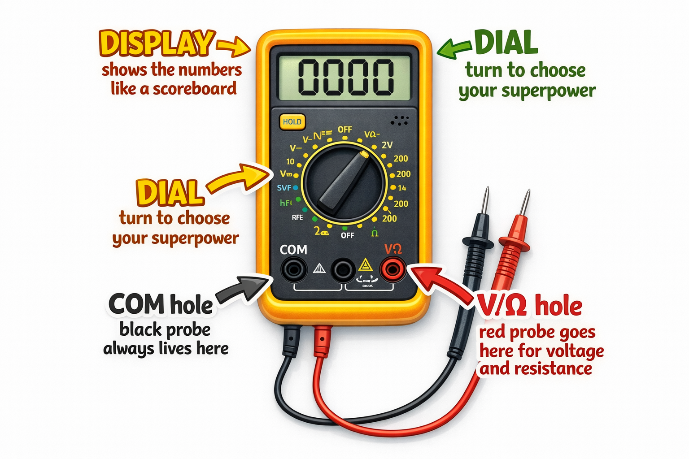

Side A — Front
⚡ ✦ ⚡ ✦ ⚡ ✦ ⚡ ✦ ⚡ ✦ ⚡ ✦ ⚡ ✦ ⚡
📚 Key Words — Learn These!
📺
🔎
Display
The screen that shows you the measurement — like a scoreboard! It shows the number your Wand reads.
🍇
⚙
Dial
The knob you turn to pick which superpower you want — voltage, resistance, or continuity.
🪢
⚡
Probes
The two pointy sticks you touch to things — like magic wand tips. You need both for every measurement.
📄
−
COM
Short for “Common” — the black probe’s home. It ALWAYS plugs into the COM hole, every single time!
🔮 Know Your Wand — Parts of the Multimeter

┌───────────────────────────────┐
│ [ DISPLAY ] │ <-- Scoreboard!
│ (big screen on top) │
│ │
│ ┌───────┐ │
│ │ DIAL │ │ <-- Turn to pick
│ └───────┘ │ superpower
│ │
│ [COM] [V/Ω] [A] │ <-- Probe holes
│ (black) (red) (red-amps) │
└───────────────────────────────┘
BLACK probe ➜ always in COM
RED probe ➜ in V/Ω hole
“Think of the probes like chopsticks for electricity. You need BOTH — one on each side!”
⚡ Three Superpowers of the Magic Wand
🔋
Superpower 1: Voltage
Measures how hard the battery pushes electricity. A 9V battery pushes HARD. A AA battery pushes gently.
Dial: DCV / V⎯
🚫
Superpower 2: Resistance
Measures how much something blocks electricity — like a narrow hallway. Measured in Ohms (Ω).
Dial: Ω symbol
🔊
Superpower 3: Continuity
Beeps when electricity can flow through something. No beep = blocked. Like a metal detector for paths!
Dial: ♫ wave icon
Side B — Back
💡 My Activity Today — What I Did!
- 1 I plugged the BLACK probe into the COM hole and the RED probe into the V/Ω hole.
- 2 I turned the dial to DCV (20V range) and measured a 9V battery — writing the number I saw on the display.
- 3 I measured a AA battery and an old battery, then filled in the chart to see which was fresh or tired.
- 4 I switched the dial to Ω and measured a 330Ω resistor, then measured my own finger (dry, then wet!).
- 5 I used continuity mode to test a coin, pencil tip, eraser, foil, popsicle stick, and salt water.
| Battery |
Expected Voltage |
My Wand Says |
Fresh or Tired? |
| 9V (new) |
9V |
|
|
| AA (new) |
1.5V |
|
|
| Old battery |
??? |
|
|
✅ Tools I Used:
- Multimeter
- 9V battery
- AA battery
- 330Ω resistor
- Jumper wires
- Coin & foil
🧠 Quiz Time! Fill in the blanks.
1. The three superpowers of the multimeter are voltage, ________________, and continuity.
hint: “resistance”
2. The BLACK probe always goes into the ________________ hole.
hint: “COM”
3. In continuity mode, the multimeter ________________ when electricity can flow through something.
hint: “beeps”
🆕 BONUS: You hold one probe in each hand. The display shows a very high number. Why does wet skin show a LOWER number than dry skin?
hint: “water lowers resistance — that’s why we never touch electronics with wet hands!”
🔬 4 Experiments You Tried Today!
A
The 9V Battery Test
Set dial to DCV 20V. Touch red to (+) end, black to (−) end.
Fresh 9V battery shows about 9.4–9.6V — your Wand sees the invisible push!
B
Measure Your Finger
Switch to Ω mode. Hold one probe in each hand.
Huge number — your body has enormous resistance! Lick finger: number drops. Water lowers resistance.
C
Resistor Check
Dial to Ω. Touch probes to each leg of the 330Ω resistor.
Display shows ~330. Slight difference is normal — resistors have tolerance!
D
Conductor Detective Game
Continuity mode. Test: coin, pencil tip, eraser, foil, popsicle stick, salt water.
Metals & salt water beep. Rubber and wood stay silent — insulators block the path!
🔬 Try at Home: Wand Journal!
Keep a small notebook as your Wand Journal. Measure every battery in the house — which ones are fresh? Which are tired?
Try testing: a graphite pencil tip, a metal spoon, a plastic bag, and a piece of paper.
“From now on you will use your Wand in EVERY lesson — it is your most important tool!”
🔧 Troubleshooting Quick Guide
| Problem | Quick Fix |
|---|
| Display shows “OL” | Number too big — try a higher dial range |
| No reading at all | Check probes are fully plugged in |
| Continuity won’t beep | Probes together first — if no beep, check battery in meter |
| Resistance reads 0 | Disconnect from circuit — no power when testing resistance! |
| Numbers keep jumping | Hold probes still and press firmly |
⚠ Wand Wielder Safety Rules — Every Wand Wielder Must Know These!
- 1Never measure wall outlets — batteries and small circuits ONLY.
- 2For resistance/continuity: disconnect the battery FIRST — no power!
- 3Probes start in COM and V/Ω. Only move to A (amps) with a grown-up.
- 4“OL” on the display means overload — don’t panic, just change the range.
- 5Probe tips are sharp — do not poke people, pets, or your sandwich!
Coming Up Next → Lesson 3: Resistors — The Traffic Controllers of Electronics!
You will crack a secret color code on tiny stripes to figure out a resistor’s value — then use your Magic Measurement Wand to check if the color code is telling the truth!